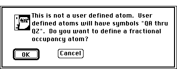
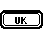
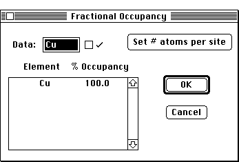
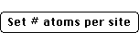
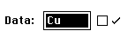

Distributed By: Virtual Labs
User Defined Atoms
PATH...Parameter Menu:Define Unit Cells:Unit Cell Dialog Box::
<Element Symbol>
Sometimes it is desirable for a particular atomic position to have multiple
elements associated with it. Desktop Microscopist supports this capability
by allowing the definition of complex atoms. The dialog box for the definition
of a complex (or user defined) atom is accessed from within the Crystal
Definition Dialog Box by double clicking on the atomic symbol of the desired
atom.
For example, it may be necessary to have the origin (0.0,0.0,0.0) occupied
in 90% of the cases by an Al atom, 5% of the time by Titanium atoms and
5% of the time by Cobalt atoms. To define this case, go to the atom currently
at the origin and double click on it. The User Defined Atom Alert Box will
appear.

Improper Atom Alert
This button will bring up the User Atom Definition
Dialog Box. A given crystal may have as many as 26 different user defined
atoms. There is no limit to the number of times any given user defined atom
may be used.

User Defined Atoms Dialog
Up to 10 atoms and their relative atomic occupancy percentages may be
specified. Only atomic percentages are supported..i.User Defined Atoms:Dialog;
This button is used to activate the Set Number of Atoms
Dialog Box. After the number of atoms has been specified, atomic symbols
and the desired atomic fractions may be entered. The highlighted value within
the list is the value which may be altered via the editable text box: .i.User
Defined Atoms:Set Num Atoms Dialog;

Author: J.ames T.
Stanley
 Desktop
Manual:Dialog Boxes
Desktop
Manual:Dialog Boxes
Distributed By: Virtual Labs
Last Updated:1/12/96 Sat, Apr 27, 1996